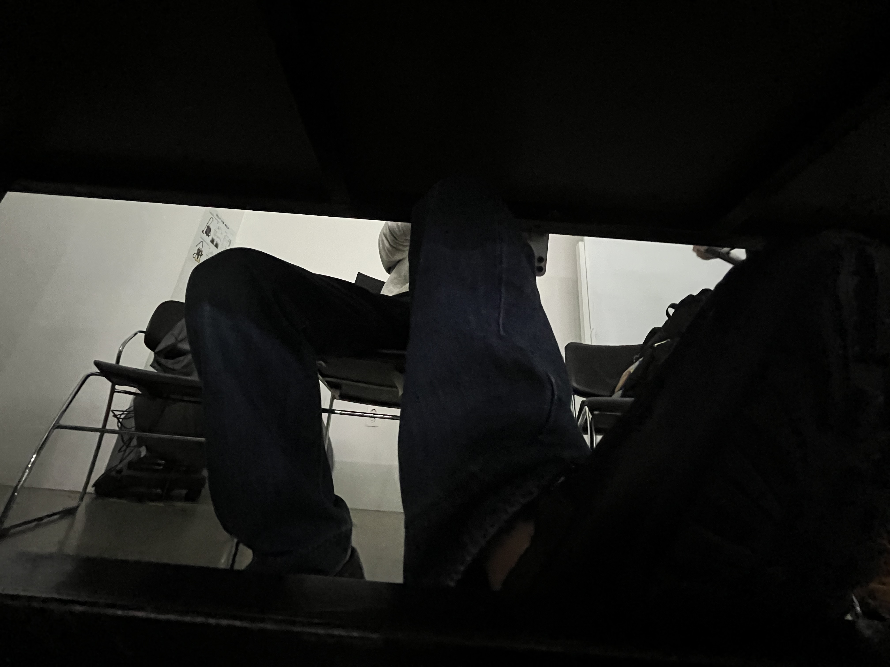

매일 사용하는 시디과 실기실의 테이블. 테이블 밑은 어떻게 생겼을지 갑자기 궁금했다. 수업이 끝나고 바닥에 드러누워 이미지를 담고자 했으나 초광각으로도 책상의 전체적인 이미지를 담지 못했다. 고안해낸 방법은 파노라마 이미지로 찍기 혹은 비디오로 전체 부분 녹화하기. 다만 비디오를 업로드 하는데에는 어려움이 있어 파노라마 사진을 올린다.

파노라마로 이미지를 담는 과정은 조금 웃겼다. 책상 밑 부분에는 가로로 된 긴 철이 있었는데 덕분에 손을 바닥에 뻗어가면서 파노라마 촬영을 했다. 책상이 생각보다 긴 탓에 핸드폰을 잡고 움직임 없이 최대한 수평으로 움직여야 했다. 힘겹게 바닥을 기어다닌 덕에 겨우 이미지를 얻을 수 있었다. 맘에 드는 이미지는 아니지만 덕분에 실제로 밑바닥 인생을 경험한 것 같다.